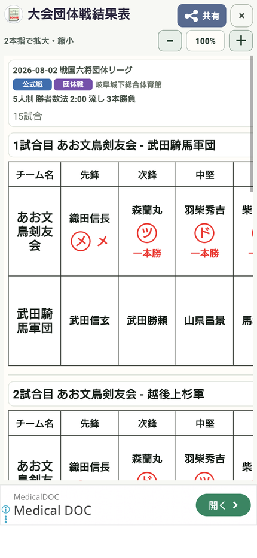

17 / 共有する
団体戦の結果表を共有する
先鋒から大将までの結果と、チーム全体の勝敗をまとめて届けます。
操作の入口履歴 → 団体戦の大会／試合 → 結果表
団体戦を選ぶ
履歴から対象の大会・団体戦を選び、結果表を開きます。
各対戦を確認する
順番と選手名、決め手、勝敗を見ます。対戦の入力漏れがないか確認します。
チームの集計を見る
チームの勝者数と取得本数を確認します。代表戦などがある場合は、その結果も確認します。
画像で共有する
共有ボタンからLINEなどへ送ります。複数試合の表は全体を確認し、必要な範囲が含まれているか見直します。

